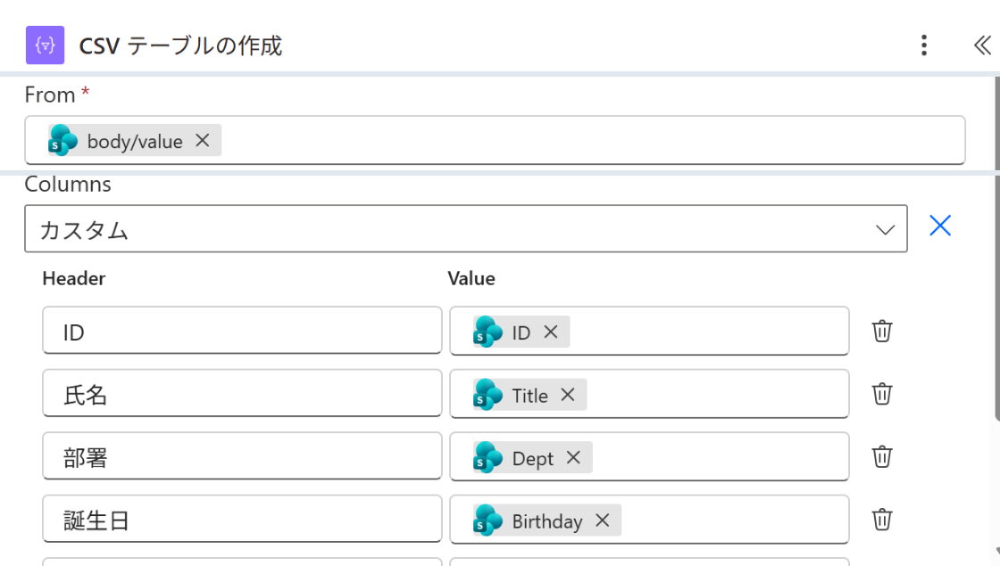
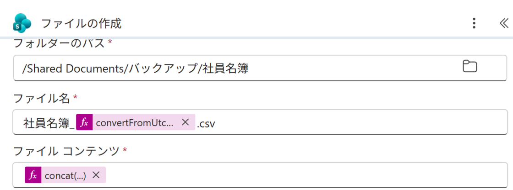

Vol.154-4
要の設定は列の指定とBOM

CSV の列はカスタムで決めておくと、リストに列が増えてもファイルの形が変わりません。
中身の先頭に BOM を付けて、日本語が Excel で化けないようにします
中身の先頭に BOM を付けて、日本語が Excel で化けないようにします

A
B
A
From は取得の body/value（行の一覧）
B
Columns を カスタムにして、見出しと値を1行ずつ

C
D
E
C
フォルダーのパス /Shared Documents/バックアップ/社員名簿
D
ファイル名に
yyyyMMdd の日付E
concat(uriComponentToString('%EF%BB%BF'), body('CSV_テーブルの作成')) で BOM を先頭に戻すときは CSV を Excel で開き、消えた行だけリストに貼り直す
出典：Microsoft Learn